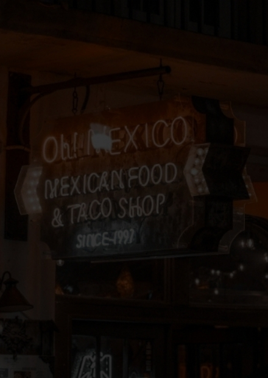

Sobre La Chica Mexican
A história do La Chica Mexican começa muito antes do nosso surgimento. O TEX-MEX era a maneira como os jornais texanos na época denominavam a estrada de ferro Texas Mexican Railway, que fazia o transporte entre o México e o Texas. Essa estrada foi a principal responsável pela migração mexicana para o sul dos Estados Unidos no século XIX, favorecendo a miscigenação da cultura e culinárias mexicana e americana (especialmente a cozinha Texana, que já possuía forte influência espanhola). Com o tempo, essa culinária foi recebendo contribuições de outros estados do sudoeste americano, especialmente da Califórnia, onde os peixes, avocados e vegetais passaram a ter destaque, tornando os pratos mais saudáveis. Nossa história começa aí. Muito antes da abertura da primeira unidade do La Chica Mexican Em 2000, após uma década morando na França, um empresário com grande visão empreendedora volta ao Brasil e abre um bar TEX-MEX em São Bernado do Campo. O enorme sucesso da casa fez surgir a ideia de criar uma rede. Foi assim que em 2007, nasceu o La Chica Mexican já com o propósito de expansão para todo o Brasil.